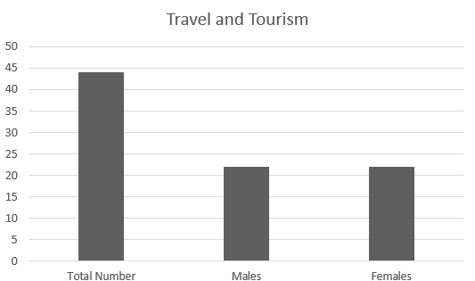

This course gives you a deep dive into the world of tourism and hospitality. You’ll learn how to plan trips, manage tourist destinations, and deliver top-notch customer service. If you love travel and working with people, this could lead you to exciting careers in travel agencies, hotels, or resort management
Enrollment and Distribution Statistics

- Enrolled Students
The chart illustrates the enrollment statistics for the Travel and Tourism specialty. A total of 44 students are enrolled, with an equal distribution of 22 males and 22 females. This balanced representation suggests a growing interest among both genders in pursuing careers in the tourism industry, indicating potential for future development in this field
The team collected this data from BTEC EMIS-vocational Dept, and it pertains only to Zarqa Governorate